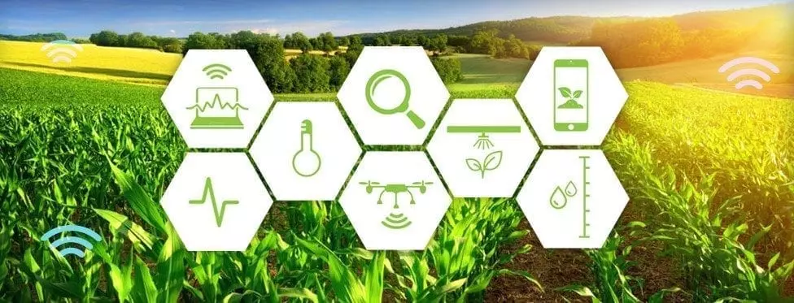

Constatamos en terreno los tremendos daños y la destrucción de patrimonio que ha causado la persistente sequía, particularmente incidente en la cuenca de Limarí, debido en gran parte al gran desarrollo de la fruticultura exportadora. La devastación es evidente a simple vista pero tras la pérdida de huertos y cosechas se oculta un esfuerzo económico sin cuantificar, millonarias inversiones de emergencia para conseguir agua potable y para riego, a nivel de agricultores, de empresas, de municipios y de gobierno central, pese a lo cual solo un 10% de la superficie de frutales tendrá producción normal. Si bien todos los valles de la Región de Coquimbo están gravemente afectados por esta interminable sequía, tanto por extensión y como por intensidad del daño la cuenca más afectada es la de Limarí, nombre que en dialecto indígena significa diez ríos, y que además, paradojalmente, corresponde a una de las zonas con más infraestructura hídrica para riego en Latinoamérica. Tres embalses de regulación interanual con una capacidad original de 1.000 millones de metros cúbicos totales y miles de kilómetros de canales de riego que junto a los 10 ríos mencionados sustentaron, al menos por unos años, entre 55.000 y 65.000 ha bajo riego (las cifras cambian), la mayoría de ellas plantadas con frutales destinados a la exportación.
Esa breve descripción corresponde a lo que se conoce como el ‘Sistema Paloma’ o ‘Sistema La Paloma’, el que en teoría debería aportar a los agricultores, una seguridad de riego del 85%, además de ser el principal soporte para el agua potable, entre otras, de la ciudad de Ovalle. Una seguridad de riego del 85% significa que de cada 100 años, 85 se tendrán riego asegurado para los cultivos. Seguridad que permite e incentiva el establecimiento de cultivos permanentes, como son los frutales, proyectos de alta inversión que por lo general son financiados mediante créditos bancarios.